独立影像创作者 · 南京
想象，在此成片
用三维构建世界，用影像讲述故事。
从一个念头，到让人记住的画面。
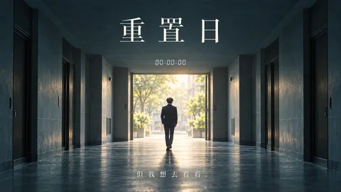
精选放映01 / 05
剧情 / AI 短片
重置日
静音片段预览
AI 影像 / 三维动画 / 动态视觉 / 剪辑向下发现更多
每个画面，都有来处
全部作品
一些故事，一些实验。
在不同的媒介里，寻找自己的表达。
还没有找到这部作品
试试其他关键词，或查看全部作品。
成片之前
正在制作
资产、分镜，还有制作时的工作台。

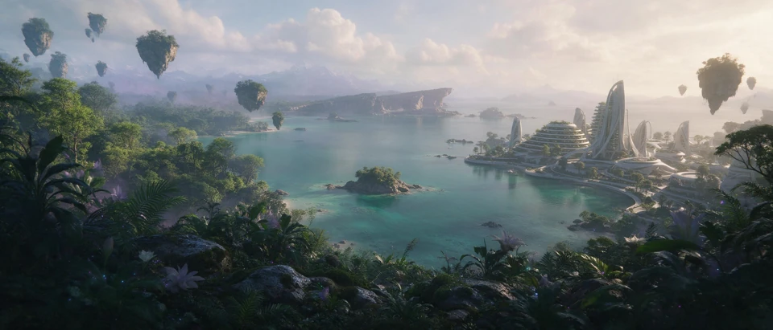
森林湖岸都市
场景资产
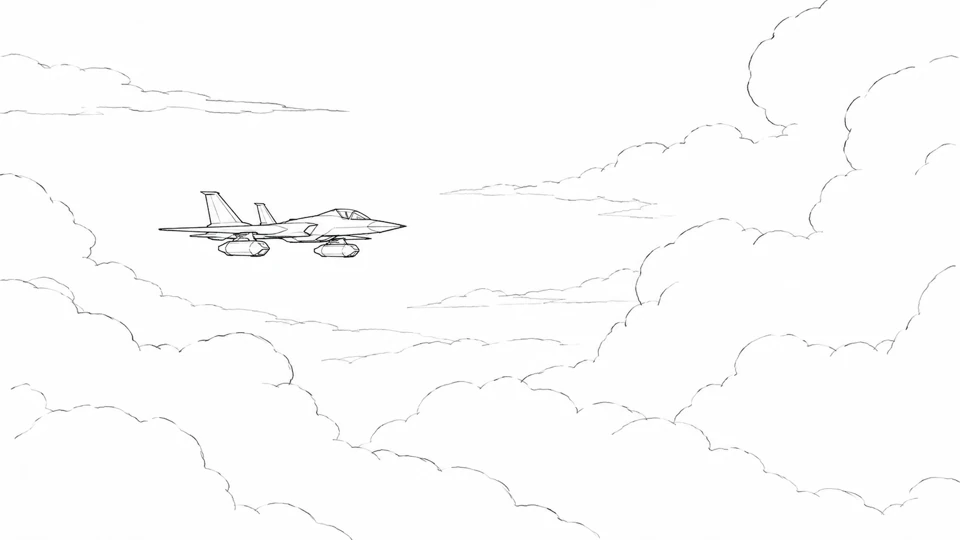
高空投送
机位与构图草图
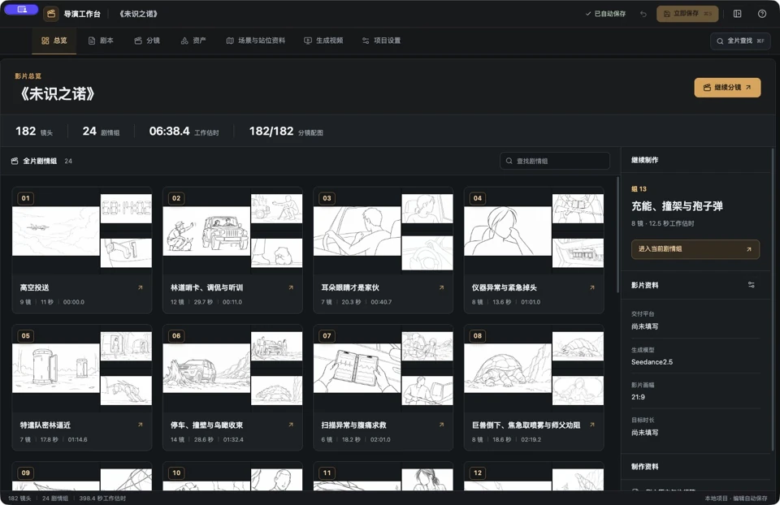
影片总览
剧情组与分镜整理
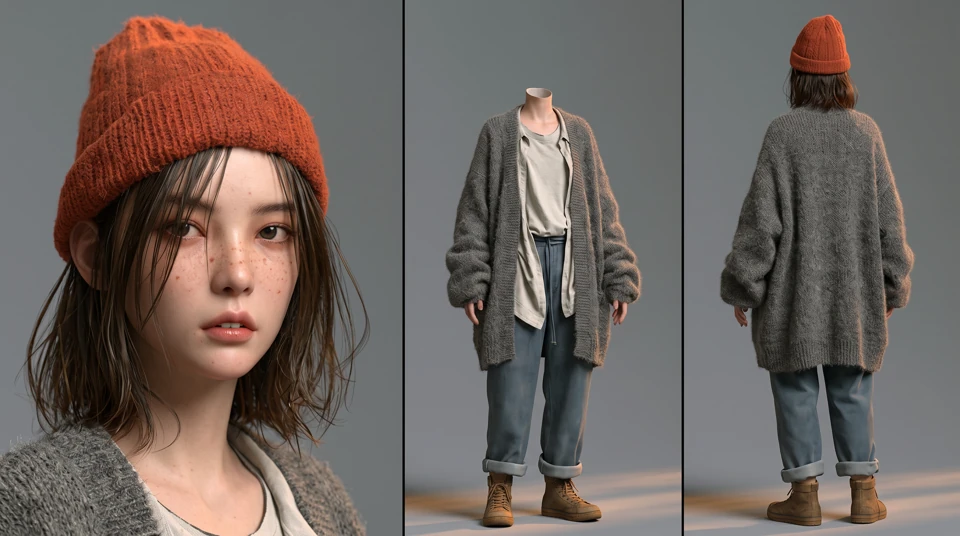
许知微
角色资产
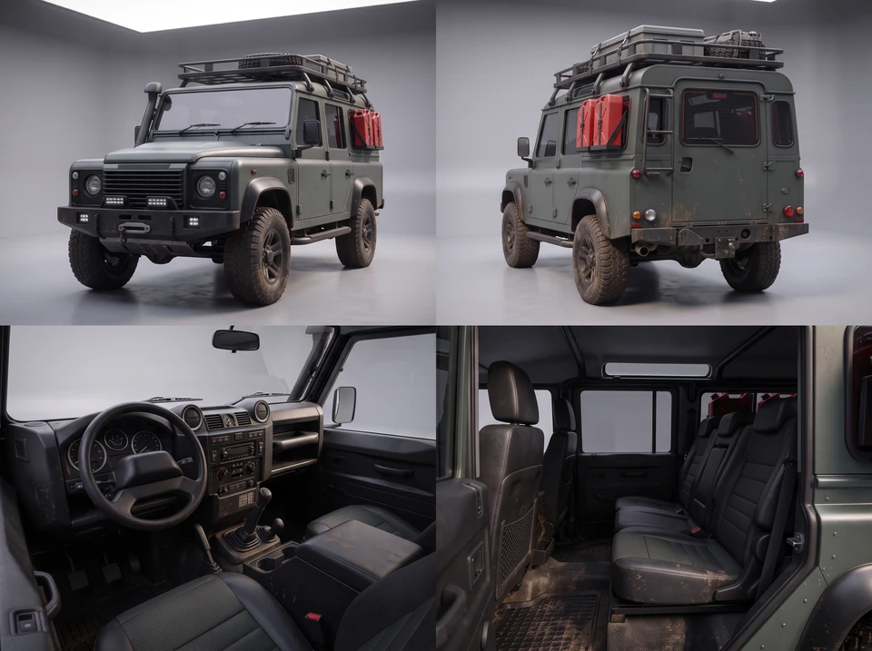
巡护越野车
内外多视图
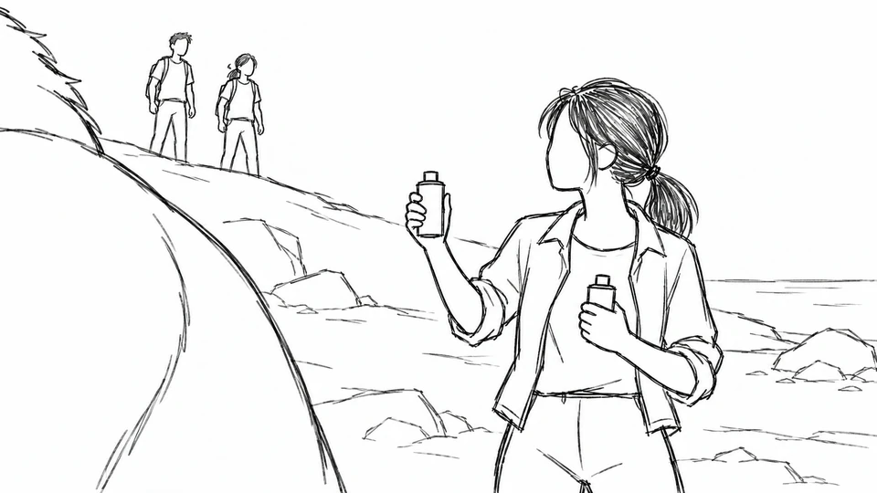
举罐示意
越肩与空间关系
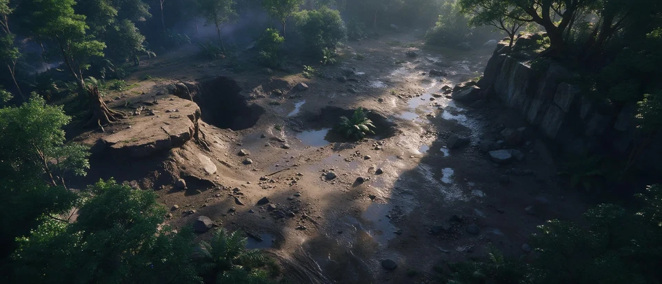
乱石滩断崖
场景鸟瞰
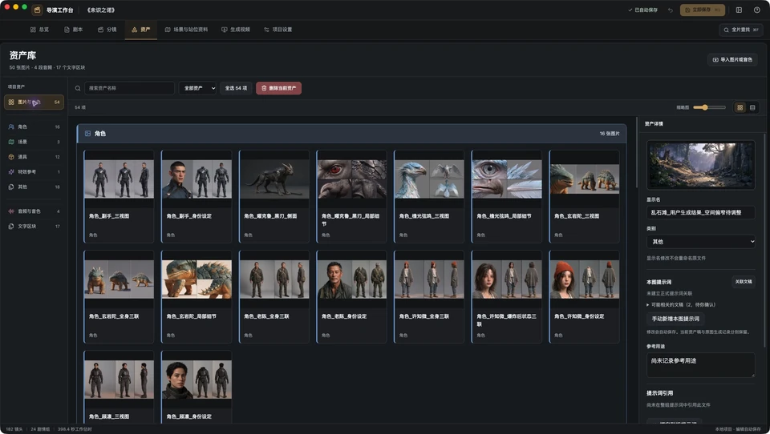
资产库整理
角色与参考图管理
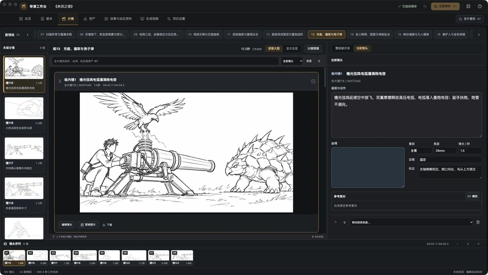
镜头细化
逐镜画面与机位参数
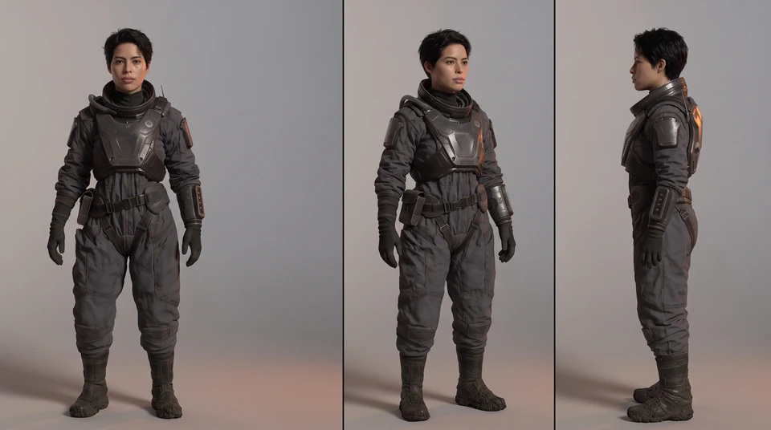
顾凛
角色三视图
战术定位仪
佩戴关系参考
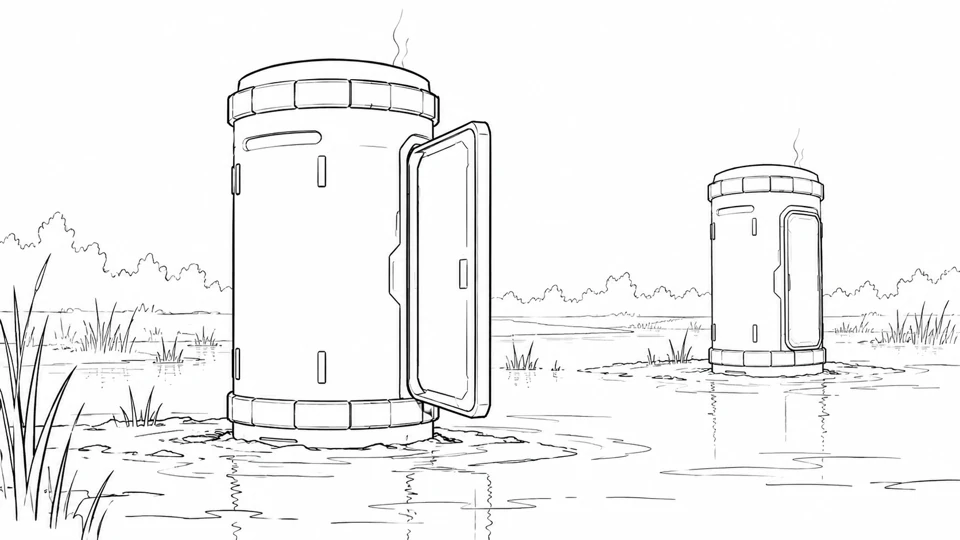
索降舱
场景与空间关系
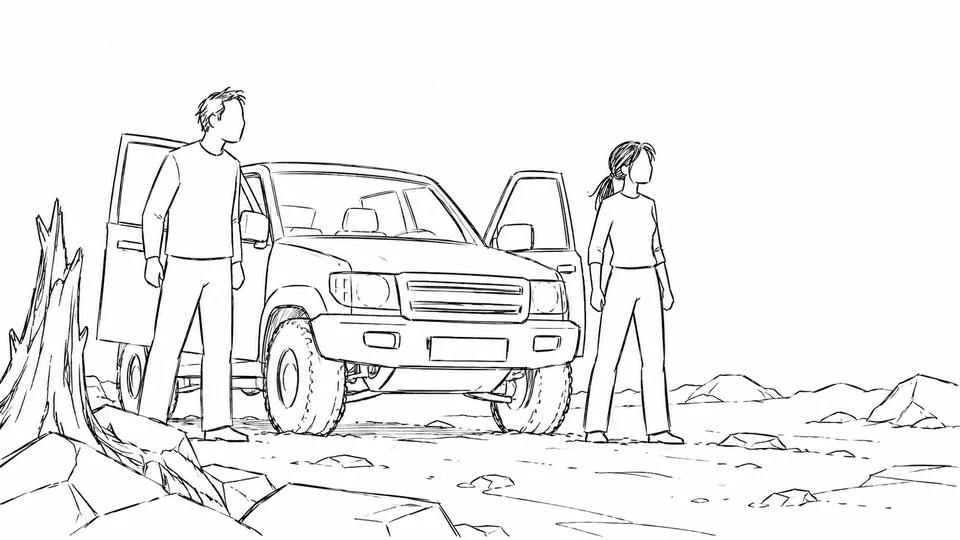
下车调度
双人全景
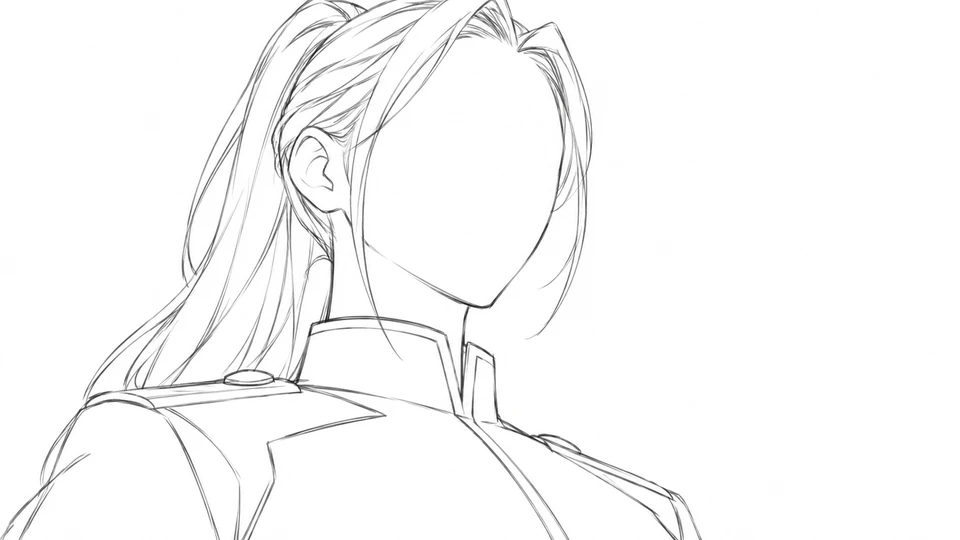
人物近景
表情与景别草图
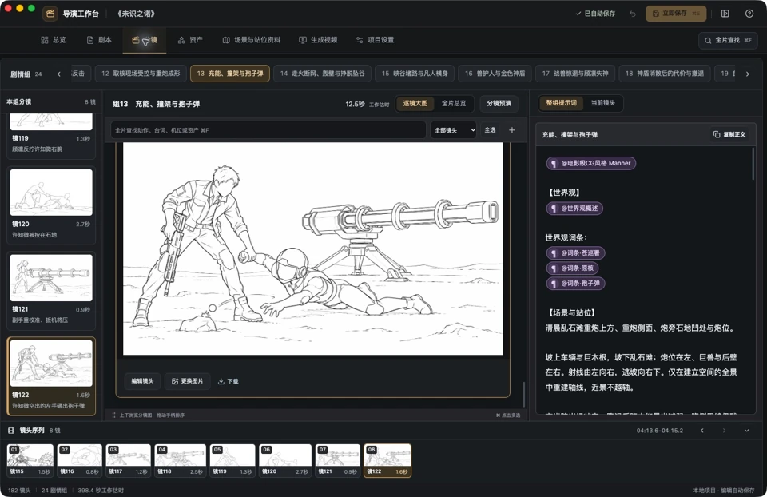
分镜工作区
画面、提示词与镜头序列画面定格
作品截图
过往创作留下的画面，
记录不同阶段的光线与情绪。

从一句「我有个想法」开始
中国 · 南京下一个画面，
一起完成
+86 180 2016 9750微信 Gw1sgdsj_787